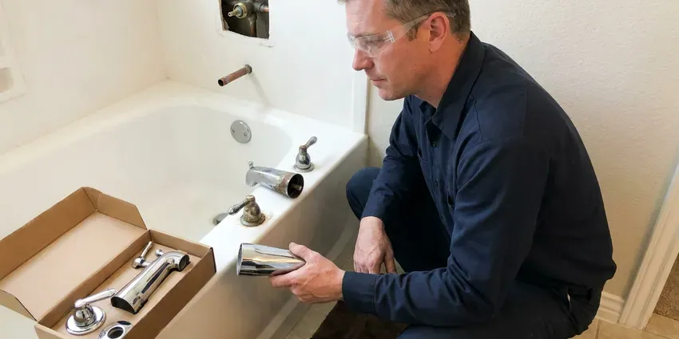

Sink Installation in Seaford, DE
We install drop-in, undermount, vessel and pedestal sinks across Seaford, DE.
- Remodel Friendly
- Delaware Plumbing Code Work
- Licensed & Insured
- Licensed Plumbers on Every Job

New Counter in Seaford, DE? We Will Set the Sink.
Send us the sink model and we will price the install before you order.
Sink Installation for Seaford, DE Homes
Most sink installs in Seaford, DE happen during a remodel. We coordinate with your countertop fabricator and cabinet installer so the sink is set, clipped and sealed before the backsplash goes up. Remodel timing is half the job. One missed step can mean pulling a finished counter.
Work we handle every week:
- Replace old stops with 1/4-turn valves
- Add a second bowl to a double vanity
- Install vessel sinks with the right slotted or unslotted drain

Additional Bathroom Plumbing Services in Seaford, DE
From toilets to showers, our bathroom plumbing team in Seaford, DE handles repairs, installs, and upgrades with tidy, code-compliant work.


Customers
Why Choose GNV Plumbing for Sink Installation in Seaford, DE?
Most sink leaks trace back to the install. An unsealed rim, an overtightened slip nut or a stretched supply line usually fails within a year. Those are the steps we never rush. Then we fill the bowl and watch the joints.
- Proper Support, Undermount bowls get clips and adhesive, never glue alone.
- Correct Drain Height, The trap arm gets moved to match the new bowl so nothing slopes the wrong way.
- Remodel Friendly, We schedule around your counter and cabinet crews.
Citywide Coverage
Suburbs are part of our regular route. Suburban homes get the same install days and windows, with no mileage charge. Ask about your street.
Experienced Team
Training keeps up with new products. Push-to-connect fittings and changes in the plumbing code both come through our yearly manufacturer classes and the continuing education hours we log. Nobody works from outdated habits.
Safety-First Approach
Water gets shut off and tested first. We close the angle stops or the main, open the faucet to make sure the line is dead, and replace any stop that will not hold before the old sink comes out. No work on live lines.
Trusted Certified Seaford Plumbing Services Professionals
At GNV Plumbing, we are proud to offer certified plumbing services throughout Seaford, DE. Credentials matter in this trade. Our plumbers hold recognized industry credentials, and they follow strict safety and quality rules on every repair, installation and maintenance call we run.
Call Us Now PHCC Plumbing Contractor Recognition
PHCC Plumbing Contractor Recognition Better Business Bureau (BBB) Accreditation
Better Business Bureau (BBB) Accreditation Angi Certified Pro
Angi Certified Pro ISO 9001 Quality Management Certification
ISO 9001 Quality Management CertificationSink Installation Work in Seaford, DE
Undermount Bowl Setting on Stone in Seaford
Stone shops cut the hole, but we set the bowl. Getting an undermount centered under a polished cutout so the reveal is even on all sides takes a helper, a few shims and patience before the clips get tightened. Uneven reveals look bad forever. We check it from both ends of the counter.

Kitchen Sink Replacement in Seaford
Pulling the old kitchen sink is half the job. Strainers are often fused on, the disposal has to come off, and the dishwasher hose needs a fresh high loop. After that, the new bowl goes in. We reuse the disposal if it still runs well.
Faucet and Drain Assembly for New Sinks in Seaford, DE
Faucet and drain go on before the sink is set, when possible. Mounting the faucet and the pop-up on a sink that is still on sawhorses takes a fraction of the time and gets a tighter seal than working upside down inside the cabinet. That does not work on undermounts. Those get plumbed from below.
Emergency Sink Replacement in Seaford
A cracked bowl cannot be patched for long. When a bowl cracks or a drain rusts through, we cap the lines first so the house keeps water, then set a new sink. Stock sizes are often same-day. Odd cutouts take longer.
Drop-In Sink Installation in Seaford, DE
Drop-in sinks are the most forgiving style. The rim hides small cutout flaws, so laminate tops take a drop-in with just a size check and the right sealant. Clips pull it tight to the counter. Stainless drop-ins weigh very little.
Wall-Mount and ADA Sink Installation in Seaford, DE
Wall-hung lavatories need a carrier or heavy blocking. ADA layouts call for a rim at or under 34 inches, open knee space, and insulated pipes below. Offset drains help with knee space. Lever or sensor faucets finish it off.
Pedestal Sink Installation in Seaford, DE
Pedestal sinks hide almost nothing. Since the trap and stops are right behind the column, we center the drain and use chrome parts that look finished. The wall needs solid blocking. The basin hangs from it, not the pedestal.

Commercial Sink Installation in Seaford, DE
Commercial kitchens need sinks the health inspector will sign off on. A three-bay sink drains indirectly through an air gap to a floor sink, and hand sinks need tempered water near each prep area. Plan review comments come first. Mop basins and grease interceptor ties are part of it.
Local Sink Installers Near Me in Seaford, DE
Searching sink installation near me in Seaford turns up a lot of handymen. A licensed plumber sets the sink, connects the drain to code and replaces the stops if they are worn, so the install passes inspection and the cabinet stays dry. That difference shows up later.
Local means we come back. Should anything loosen after install, the same crew is close and returns within a day or two. Callbacks get priority.
GNV Plumbing at a Glance
- Licensed and insured plumbers serving Seaford, DE
- 24/7 emergency service with same-day scheduling
- Clear written estimates, no hidden fees
- 4.8-star rated by 849+ Delaware customers
Seaford Map
Seaford Information
- Population
- 8,735
- Area codes
- Local
- Service area
- Seaford and communities within 40 miles
- Nearby
- Georgetown, Millsboro, Milford, Dover
A poorly set sink in Seaford, DE leaks into the cabinet and the floor below, often for months before anyone sees it. Rapid growth in coastal and suburban areas means many newer homes in Delaware are built with PEX supply lines and PVC drains.
Talk to a Plumber
Reach out to GNV Plumbing for reliable plumbing work done by licensed pros in Seaford, DE.
Our Specialized Plumbing Services in Seaford, DE
At GNV Plumbing, you get every kind of plumbing service from one company across Seaford, DE. We go from leak detection all the way to full system installations, for homes and commercial buildings, and we do it quickly at a fair price. Take a look at our core services below:


What Happens on Sink Install Day in Seaford, DE
Here is what to expect when we set your new sink in Seaford.
Request a Quote
Call (302) 406-6354 and tell us the sink style. You get a flat price.
Remove and Prep
We pull the old sink, cap the lines and replace worn stops.
Install and Test
The new sink is set, sealed and plumbed, then tested with a full bowl.
Frequently Asked Questions About Sink Installation in Seaford
Labor for most sink installs runs $200 to $600. Same-cutout drop-ins are near the low end, and undermounts or plumbing changes push toward the top. That price does not include the sink.
It depends on the scope. A replacement in the same spot with the same drain is usually considered repair, but new drain lines or a second bowl usually require a permit from the city or county. Rules vary by city.
Sometimes, with limits. An undermount needs a cutout with a finished, polished edge, so an existing counter cut for a drop-in usually has to be recut and polished by a stone shop before we can hang a new bowl under it. We can recommend a shop.
Our labor is warrantied in writing. If a joint we made leaks or a clip we set loosens during the warranty term, we come back and fix it at no charge, and the term is printed on your invoice. Fixtures carry the maker's warranty.
Start with the faucet. Faucet holes and spout height must suit the sink, so choosing the faucet first avoids a return. Bowl depth matters next.
Not always. A working faucet with a matching hole pattern can be reused, though a worn one is worth replacing now. Swapping later costs more.
Yes, that is routine work. After the fabricator polishes the cutout, we clip and seal the bowl and return after cure to plumb it. Faucet holes get drilled by the shop.
A vanity top swap is a fair weekend project. Lining up the trap and sealing the flange are where DIY installs go wrong. If it drips, we can fix it.
Hear From Customers Who Hired Our Plumbing Experts

Karen W.
After our third pinhole leak in copper, we stopped patching. GNV Plumbing gave us a written plan room by room and repiped the house in PEX while we stayed in it. The crew covered our floors every morning and cleaned up every night.
Repiping · Middletown, DE
Lisa C.
Water was pouring out from under the washing machine on a holiday weekend. GNV Plumbing talked me through closing the valves over the phone and had a plumber at the house within ninety minutes. It was a burst fill hose.
Emergency Plumbing · Milford, DE
Sofia M.
Two new toilets went in during one visit. The tech set them on new wax rings and swapped the old supply lines. He also noticed our bathroom faucet dripping and replaced the cartridge while he was there. No mess left behind.
Toilet Installation · Dover, DE
Nathan E.
Our tankless heater kept throwing an error code and shutting off mid shower. The tech flushed the heat exchanger, which was full of scale, and replaced a bad flow sensor. Hot water has been steady for half a year now.
Water Heater Repair · Georgetown, DERachel N.
Hard water was leaving white crust on every faucet and our dishwasher was struggling. The tech tested the water, recommended a softener sized for a family of five, and installed it with a bypass valve in one afternoon. The spots on our glasses are gone.
Water Softener · Milford, DEJessica T.
We were adding a gas range in a kitchen remodel and needed a new line run from the meter. The plumber pulled the permit, ran the pipe through the crawl space, and had it inspected and approved within the week.
Gas Line Repair · Dover, DE